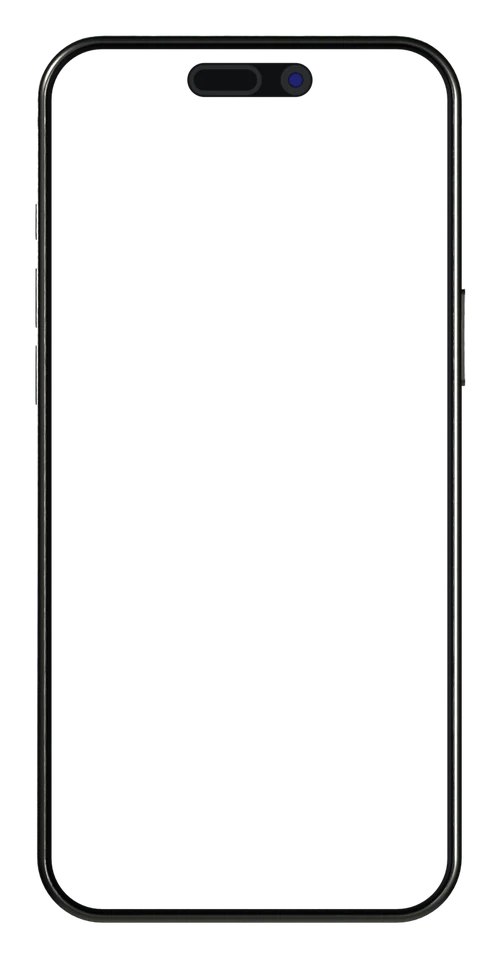

02Die Beigaben
Die Karte am Tisch.Auf dem Handy.
Die Karte des Abends auf dem Handy des Gastes: Gänge, Herkunft, Allergene, der Wein dazu. Am Beispiel von Maloja, einem Restaurant in einem Kontor der Speicherstadt.
19:52
MALOJADie Karte am Tisch
Tisch 4 · am BogenfensterGuten Abend, Familie Brandt.

- Heute AbendSieben Gänge, der vierte: Steinbutt
- Herkunft und AllergeneNordsee · Milch, Fisch
- Der Wein dazuChasselas aus der Waadt
- Zum SchlussEin Taxi rufen

20:05
MALOJAHeute Abend
Sieben Gänge · HerbstDie Karte des Abends.
- Bünden · HamburgBrot und ButterBündner Zopf, Roggenbrot, gesalzene Butter
- Bünden · ElbeGerstensuppenach Bündner Art, geräucherter Aal, Schnittlauch
- Bünden · OstseeCapunsMangold, Saibling aus der Ostsee, Rahm
- Waadt · NordseeSteinbuttChasselas-Sauce, junger Lauch
- Zürich · FrankenKalb Zürcher ArtRahm und Pilze, Rösti aus Bamberger Hörnchen
- AlpKäse vom WagenAlpkäse aus Graubünden, Feigensenf
- Engadin · VierlandeEngadiner NusstorteVierländer Apfel, geschlagener Rahm
MALOJA
Herzlich willkommen
Familie BrandtTisch 4 · am Bogenfenster01Am Tisch
Der Codeauf dem Tisch.
Der Gast öffnet ihn mit der Kamera: der Gang, seine Herkunft, die Allergene und der Wein dazu.
Eine Seite je Abend, in seiner Sprache
19:52
MALOJADie Karte am Tisch
Tisch 4 · am BogenfensterGuten Abend, Familie Brandt.
- Heute AbendSieben Gänge, der vierte: Steinbutt
- Herkunft und AllergeneNordsee · Milch, Fisch
- Der Wein dazuChasselas aus der Waadt
- Zum SchlussEin Taxi rufen
MALOJA
Herzlich willkommen
Familie BrandtTisch 4 · am Bogenfenster02Die Karte
Sieben Gänge,mit Herkunft.
Alle Gänge des Abends, aus den Bergen und von der Küste, so wie die Küche sie einträgt.
Wechselt mit der Karte der Saison
20:05
MALOJAHeute Abend
Sieben Gänge · HerbstDie Karte des Abends.
- Bünden · HamburgBrot und ButterBündner Zopf, Roggenbrot, gesalzene Butter
- Bünden · ElbeGerstensuppenach Bündner Art, geräucherter Aal, Schnittlauch
- Bünden · OstseeCapunsMangold, Saibling aus der Ostsee, Rahm
- Waadt · NordseeSteinbuttChasselas-Sauce, junger Lauch
- Zürich · FrankenKalb Zürcher ArtRahm und Pilze, Rösti aus Bamberger Hörnchen
- AlpKäse vom WagenAlpkäse aus Graubünden, Feigensenf
- Engadin · VierlandeEngadiner NusstorteVierländer Apfel, geschlagener Rahm
Dazu gehören das Markenbuch und Mails, im selben Stil wie alles andere.

Ein erstes Gespräch
Ihr Restaurant,Ihre Werkzeuge.
Jedes Werkzeug bauen wir für Ihr Restaurant: mit Ihren Karten, Ihren Menüs, Ihrem Ton. Erzählen Sie uns, womit Ihr Team heute arbeitet.